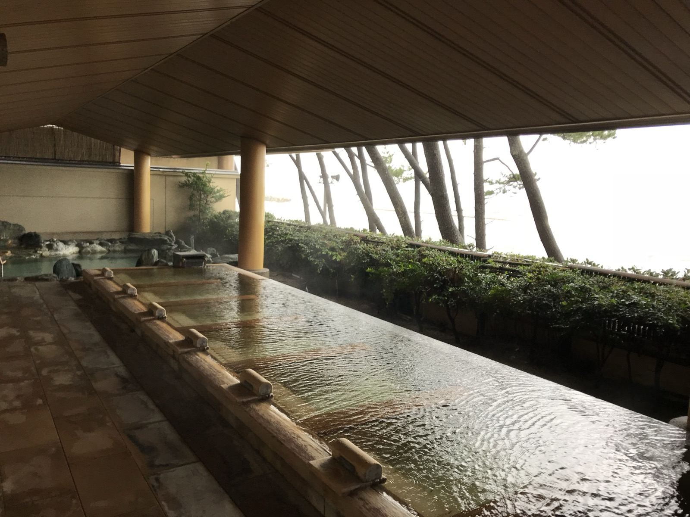

大山・米子・皆生の日帰り温泉ガイド


大山エリア
大山寺参道エリアにある温泉施設です。下山後やスキー場の帰りに、そのまま立ち寄れます。ハレ・マカワオから最も近い日帰り温泉です。
大山寺参道にある、大山の頂上に最も近い日帰り温泉施設です。大山の地下から汲み上げた酸化還元水を使用しており、「大山火の神岳温泉」の名でも知られています。露天風呂からは大山の山並みが見えます。豆乳を使ったメニューもあります（提供内容は変わることがあるため最新は公式でご確認ください）。登山・スキーの後に立ち寄る人が多い施設です。
- 住所: 〒689-3318 鳥取県西伯郡大山町大山25
- 電話: 0859-48-6801
- 入浴料: 大人（中学生以上）790円、小学生300円、未就学児無料
- 営業時間: 11:00〜19:00（最終受付18:20）
- 定休日: 毎週水曜日
- 公式: 豪円湯院
当宿から車で約5分です。大山登山の記事でも紹介しています。登山やスキーの後に豪円湯院へ寄り、そのままハレ・マカワオへ戻る行程が組めます。
米子・淀江エリア
米子市・淀江町エリアには、天然温泉の2施設があります。大山観光の帰路や、米子・境港方面の観光（水木しげるロードなど）と組み合わせやすいエリアです。
100%かけ流しの天然温泉の施設です。温泉プールやロウリュサウナも備えています。当宿から車で約15分です。
- 住所: 〒689-3402 鳥取県米子市淀江町淀江2-38
- 電話: 0859-56-1111
- 入浴料（温泉のみ）: 大人（高校生以上）平日1,400円・土日祝1,500円、小学生〜中学生600円
- 営業時間: 10:00〜22:00（最終受付21:30）
- 定休日: 毎週木曜日
- 公式: ラピスパ
露天風呂があり、弱アルカリ性の泉質は「美肌の湯」として知られています（浴槽の管理方法など詳細は公式でご確認ください）。食堂を併設しています。
- 住所: 〒689-3411 鳥取県米子市淀江町福岡1547
- 電話: 0859-56-6798
- 入浴料: 大人850円、中高生600円、3歳〜小学生450円
- 営業時間: 平日10:00〜21:00（最終受付20:30）、土日祝10:00〜22:00（最終受付21:00）
- 定休日: 毎月第4水曜日（祝日の場合は翌日）
- 公式: 白鳳の里
皆生温泉エリア
米子市の皆生（かいけ）温泉は、日本海に面した温泉街です。ハレ・マカワオから車で約20分（目安）です。日帰りで入浴できる3施設を紹介します。
皆生温泉の湯元に位置する日帰り温泉施設（おーゆホテル併設）。丸い形が特徴の「おー風呂」とU字型の「ゆー風呂」、露天風呂、サウナを備えています。韓国式あかすりやマッサージなどのボディケアメニューもあります。
- 住所: 〒683-0001 鳥取県米子市皆生温泉1-18-1
- 電話: 0859-31-2666
- 入浴料: 大人（高校生以上）550円、中学生350円、小学生200円、未就学児100円（サウナ付きは800円）
- 営業時間: 10:00〜23:00（最終受付22:30。毎月第3月曜日は正午から）
- 公式: おーゆ・ランド
ベイサイドスクエア皆生ホテル内にある日帰り温泉施設。露天風呂から日本海を一望できます。早朝風呂も利用できます。
- 住所: 〒683-0001 鳥取県米子市皆生温泉4-21-1（ベイサイドスクエア皆生ホテル内）
- 電話: 0859-35-0006（ベイサイドスクエア皆生ホテル）
- 入浴料: 大人 平日700円・土日祝800円、小人（3歳〜小学生）400円。早朝（6:00〜10:00）は大人 平日400円・土日祝500円
- 営業時間: 6:00〜10:00、11:00〜23:00（10時台は清掃のため入浴不可）
- 公式: 汐の湯
中国地方最大級ともいわれる露天風呂がある日帰り温泉施設です。海を望む大浴場、リラクゼーション、海を眺めるレストランも備えています。皆生温泉に隣接する米子市新開にあります。
- 住所: 〒683-0801 鳥取県米子市新開3-2-46
- 電話: 0859-23-0303
- 入浴料: 大人（中学生以上）1,580円、4歳〜小学生750円（タオル・館内着付き。2026年7月改定）
- 営業時間: 公式でご確認ください
- 定休日: 設備点検による年2回の休館のみ
- 公式: オーシャン
料金と営業時間の一覧
| 施設 | 大人の入浴料 | 営業時間 |
|---|---|---|
| 豪円湯院 | 790円 | 11:00〜19:00（水曜休） |
| ラピスパ | 1,400円〜 | 10:00〜22:00（木曜休） |
| 白鳳の里 | 850円 | 10:00〜21:00（土日祝は22:00まで） |
| おーゆ・ランド | 550円 | 10:00〜23:00 |
| 汐の湯 | 700円〜 | 6:00〜10:00、11:00〜23:00 |
| オーシャン | 1,580円 | 公式で確認 |
各施設の公式サイトの掲載内容（2026年11月11日確認）。料金や営業時間は変わることがあります。お出かけ前に各施設でご確認ください。
エリア別 距離・タイプのまとめ
HALE MAKAWAOからの目安距離
- 豪円湯院（大山エリア）: 車で約5分。最も近く、登山・スキーの後に立ち寄れる
- 湧くわく天然温泉 ラピスパ（米子・淀江エリア）: 車で約15分。かけ流し、温泉プール、ロウリュサウナ
- 淀江ゆめ温泉 白鳳の里（米子・淀江エリア）: 車で約15分。露天風呂、美肌の湯
- おーゆ・ランド / 汐の湯 / オーシャン（皆生温泉エリア）: 車で約20分。日本海に面した温泉街の3施設
※ いずれも所要時間は目安です。道路状況・時間帯により変動します。